The company portal https://j-aautomation.com/j-aautomation/app is LIVE. A link to it never enters a simulation. For practice obtain a separately provisioned training URL, your own account, the permitted fictional project and dates, a visible environment identifier and the trainer’s reset procedure. Without those, use this guide as a read-only demonstration and enter only authorized genuine work.
Original BBS operational examples and some historical unpaid settlements were saved on the live deployment; their original exports were downloaded there. Later fictional issuance, payment, acceptance, correction and readiness exercises used isolated copies or separate synthetic portfolios. Each chapter identifies its dataset and checkpoint. A later screenshot does not change an earlier saved workbook or issued master.
A role, project membership, review permission, supplier authorization and dated crew delegation are separate. Use your own credentials. Inspect another person’s permitted operational record without signing in as them. Ordinary workers and project managers do not receive customer prices, internal cost, margins or another worker’s compensation.
Verify the result
Confirm your displayed identity, the environment, project number and work dates before saving. For training/reset or lost access contact admin@j-aautomation.com; send the route, role, project/record reference, time and visible error. Keep passwords, activation links, recovery codes and cookies private.
If you get stuck
For an empty project selector, ask the Owner to check account status and assignment/authorization coverage. Do not create a duplicate project or borrow another account.
J&A Automation · BBS role manual · 6 October 2026
Access · activate the invitation and sign in
Go here: Your trusted invitation → Activate your account → Return to sign in → Profile
Do the task
Check the portal address and named account against the invitation provided by the Owner. There is no public sign-up. For an already provisioned account, use the sign-in method supplied to you; do not attempt to activate someone else’s invitation.
For a single-use activation link, open Activate your account. Enter Full name and choose a Password of at least 12 characters, then Activate account. Wait for Account activated. You can sign in now. Do not repeatedly submit while Activating… is displayed.
Choose Return to sign in. Enter your account Email and Password and select Continue to workspace. If you previously enabled MFA, complete Verify your identity with the current Six-digit code and Verify and continue. Use a recovery code only through the offered Use a recovery code control.
Open Profile and verify the own-account name/email/role in Account security. Check the navigation and assigned project. A newly activated account can have zero assignments; activation alone does not grant project access or supplier/chief authority.
Verify the result
The activation success message precedes the separate sign-in. The illustrated new Worker signed in and reached their own Profile; no assignment or financial permission was implied.
If you get stuck
An expired or already used link displays This invitation could not be activated. It may have expired or already been used. If activation already succeeded, return to sign in. Otherwise request a new invitation from the Owner; reloading does not renew the old link.
For offline, temporarily unavailable or rate-limited activation, retain the entered name/password privately, restore connectivity or wait for the displayed retry interval, then retry. An unconfirmed response is not proof of an active account.
For an incorrect password, inactive account or lost access, contact admin@j-aautomation.com from your verified account/contact channel. Supply identity and the visible error; never send the password. This guide does not promise a public password-reset form. The initial Owner is provisioned by the platform operator; an existing Owner provisions the remaining team.
J&A Automation · BBS role manual · 6 October 2026
Access · activate the invitation and sign in
Isolated new recipient: the native activation success message. The password remains masked; this is separate from sign-in.
J&A Automation · BBS role manual · 6 October 2026
Access · activate the invitation and sign in
Reusing the same single-use training invitation shows the genuine recovery message. Return to sign in if already activated; otherwise request a new invitation.
J&A Automation · BBS role manual · 6 October 2026
Trainer setup · prepare a normal cycle before exceptions
Ask the trainer to provide the following checkpoint sheet before reproducing a lesson. Reusing a shared historical BBS period does not reset it. A production URL is never a training switch.
Checkpoint
Required starting condition
Identity and environment
Own correctly provisioned role/profile; isolated URL and visible environment identity.
Project and dates
Exact project number, timezone and unused eligible lesson dates; membership and relevant grants cover both current access and the work date.
Source state
Named source IDs and durations/amounts; ordinary starting drafts/submissions; no unrelated correction already open.
Financial/evidence locks
List issued/closed periods, finalized settlements and signed report versions. Teach ordinary correction on an unlocked scope first.
Expected outcome
Saved state, source count, actual total and appropriate own/customer/internal output. Include the receiving role and result.
Reset
Operator restores the prepared database AND private documents together to the named checkpoint while training is stopped. Trainees do not delete financial history to reset a lesson.
Verify the result
The new normal Worker/Chief lesson uses BBS READINESS · normal work cycle (C-0050-P-2026100601) with initially unfinalized October work. Original BBS locked-period examples are exceptions. External/Supplier/PM October 13–19 and Finance October 26 demonstrations are separately labelled; Accounting can use a separate clean synthetic portfolio.
J&A Automation · BBS role manual · 6 October 2026
Review authority · who receives each source
Review is determined by the actual source, base role and current dated grants. Chief delegation alone grants recording, not approval. A Worker with Can review checked does not become a Project Manager or Finance user. Send a factual correction reason with every return.
Source / recorder
Operational reviewer and prerequisite
Next handoff
Internal own or chief-delegated time
Owner or Finance; assigned PM with current active Can review membership for this project.
Owner/Finance records commercial Billable or Non-billable review separately.
External/supplier time, including coordinator own time
Authorized Owner. Supplier authorization/recorder provenance keeps these sources outside the ordinary PM time queue.
Finance review follows Owner approval.
Own/delegated expenses
Owner or Finance; assigned PM with current project review grant. Check factual purchase, payer and evidence.
Owner/Finance classifies customer recovery and worker reimbursement separately.
Daily and Technical reports, including supplier profiles
Owner or Finance; assigned PM with current project review grant and permitted project scope.
Owner/Finance prepares the customer period report and version-bound acceptance where required.
PM’s own work
Route it to another authorized reviewer for an independent factual check. Do not infer a universal self-review prohibition solely from a job title.
Personal reports/pay outputs remain own scope; financial treatment belongs to Owner/Finance.
If you get stuck
If the intended source is absent, check source type, state, dates, assignment/review grant and supplier authorization before searching another queue. A review-enabled Worker Chief variant is not exposed by the current role model; Owner must provision the genuinely permitted reviewer role and grant. Never use a colleague’s credentials to bypass this boundary.
J&A Automation · BBS role manual · 6 October 2026
Start with authorized supplier access
Isolated BBS supplier role lab · genuine External Technician account · fictional October 2026 records
Go here: Sign in → Time
Use the individual External Technician account created or invited by the Owner. There is no public sign-up. Account activity, supplier association, supplier project authorization and your project assignment must all cover the work date. A supplier coordinator is a different role and may record team work; that does not let you see another technician’s sources.
This course uses BBS ROLE LAB External Technician in the isolated C-0050-P-20261005 · BBS · Ejemplo de manual project. New work is fictional, outside the original billed October 2–5 history. The supplier authorization covers October 5–31. No live dispatch, purchase, equipment change or bank transfer occurred.
Before practising obtain an operator-provided training URL, own account, visible environment identifier, permitted scope and reset instructions. No shared training credentials are supplied. Live company portal or webmail links open live services, never this isolated demonstration.
Do the task
Sign in with your own account and verify environment, account and language.
Use Time for your own hours, Expenses for your own operational purchases, Reports for your own Daily/Technical facts and Operational report for your allowed activity summary.
Use Profile and Help for own workforce/security settings and guidance.
Verify the result
Your assigned BBS project is available. Finance, Billing, My Pay and supplier team administration are outside this role.
If you get stuck
Ask the Owner/coordinator to investigate account, supplier authorization or assignment dates when the intended project is absent. Do not borrow an account or create duplicate work.
J&A Automation · BBS role manual · 6 October 2026
Start with authorized supplier access
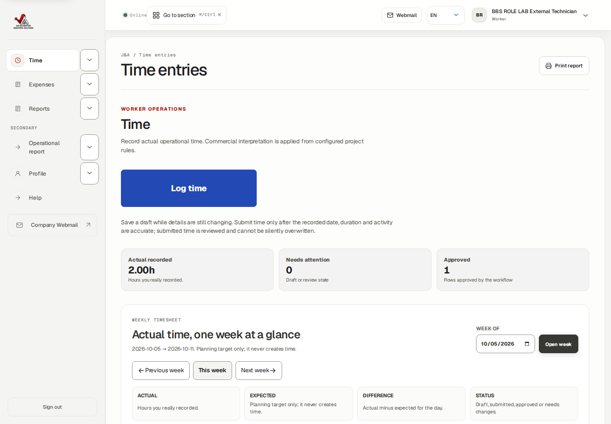
Native own External Technician Time workspace and narrow role navigation.
J&A Automation · BBS role manual · 6 October 2026
First shift: save actual time, then submit
Native isolated BBS role exercise · C-0050-P-20261005 · synthetic October 2026 work only
Go here: Time → Log time
Begin with your own assigned project and actual work. Published plans and expected hours are planning information; neither creates time. The October 13 example records fictional documentation work, not a real dispatch.
A draft remains editable. Submit only after checking project, work date, duration and activity. Submission sends supplier time to Owner review and locks ordinary editing. See Review authority · who receives each source (review-authority) and Recovery · sources, obligations and immutable history (recovery-matrix).
Do the task
Open Time and choose Log time. Select BBS, Work date 2026-10-13, Category Regular time, Duration in hours 1.25 and a precise synthetic activity summary.
Check any site, shift or break fields against the actual work. Choose Save draft and wait for the saved result; a Saving label is a transient state.
Open the saved source, confirm 1.25 h and Draft, then choose Submit. Verify Submitted on that source.
Verify the result
Native Save draft and Submit succeeded. Original source 01a11176-38c3-713d-92a2-e4f5ab3d9240 was later returned for correction; its current state is Needs changes.
If you get stuck
If save fails, correct the visible validation error and verify whether a source was created before retrying. Never create a duplicate to replace a submitted source.
J&A Automation · BBS role manual · 6 October 2026
First shift: save actual time, then submit
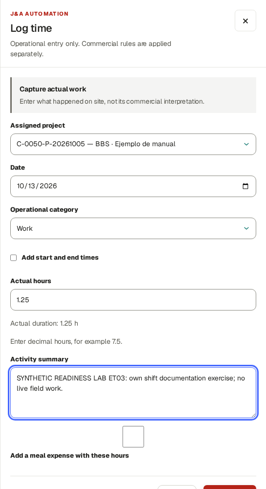
Complete native first-shift form immediately before Save draft.
J&A Automation · BBS role manual · 6 October 2026
First shift: save actual time, then submit
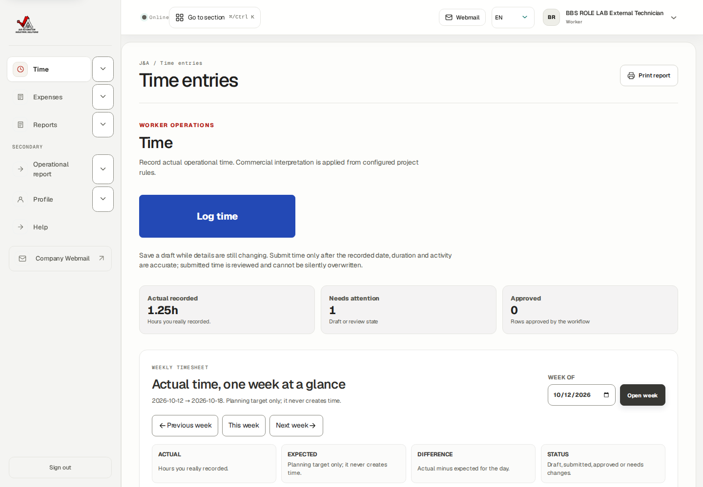
Saved draft result; this checkpoint precedes submission and later review.
J&A Automation · BBS role manual · 6 October 2026
Correct returned time and verify Owner approval
Native isolated BBS role exercise · C-0050-P-20261005 · synthetic October 2026 work only
Go here: Time → returned source → Create corrected draft
Needs changes preserves the submitted source and reviewer reason. A correction creates a linked replacement; it does not silently overwrite approved or submitted history.
The October 13 original records 1.25 h. Owner requested one actual hour; the replacement records 1 h. The original remains Needs changes and the replacement is Approved.
Do the task
Open the returned source and read the reason. Choose Create corrected draft.
Confirm date, category and actual duration; write the corrected activity and Reason for correction. Choose Create correction draft.
Check the linked draft and original link. Submit individually or include the eligible draft in Submit this week. After Owner review, reopen the replacement and verify Approved and its approved timestamp.
Verify the result
Correction 01a1117a-6cef-7576-900b-329b43e9ecb0 is Approved; the saved linked original remains visible. The isolated audit also verified Owner as the recorded approver. The source screen shows the approval timestamp, rather than a reviewer-name field.
If you get stuck
If a reason remains unclear, ask the Owner/coordinator before submitting. An explanation does not itself change review state.
J&A Automation · BBS role manual · 6 October 2026
Correct returned time and verify Owner approval
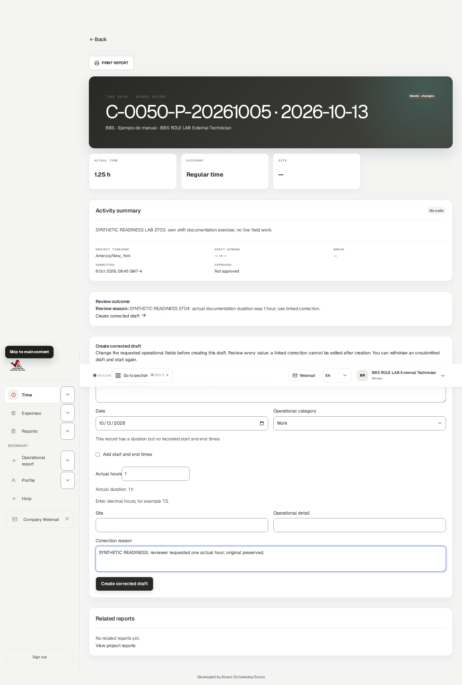
Actual linked correction form with corrected duration and reason.
J&A Automation · BBS role manual · 6 October 2026
Correct returned time and verify Owner approval
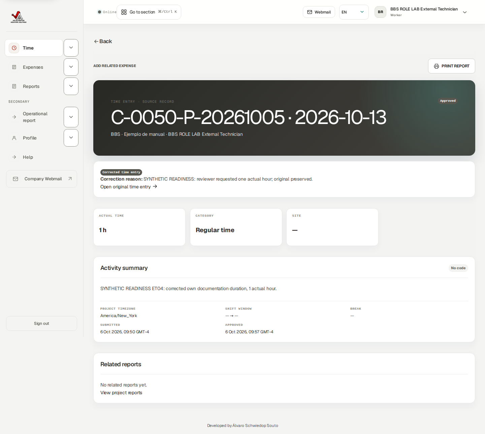
Actual October 13 linked replacement: Approved, 1 h, original link and approval timestamp.
J&A Automation · BBS role manual · 6 October 2026
Review a week and submit eligible drafts
Native isolated BBS role exercise · C-0050-P-20261005 · synthetic October 2026 work only
Go here: Time → Weekly timesheet
Actual is saved work. Expected is a planning target. Difference is actual minus expected. Needs note can remain on approved days whose actual hours differ from the target: October 13 shows actual 1 h, expected 8 h and difference −7 h.
There is no weekly control that promises to clear Needs note. Record a truthful explanation in the source activity or correction reason where appropriate; that text may not remove the calculated indicator.
Copy previous week layout prepares draft structure; it never proves that copied work occurred. This copy action was source-checked, not executed in this exercise.
Do the task
Open week 2026-10-12 and inspect dates, actual, expected, difference and source states.
Before Submit this week, identify every eligible draft and its actual work. The native October 12–18 exercise included ordinary draft 01a1117a-ab69-72fe-9fe3-d618ef3ac078 and linked correction draft 01a1117a-6cef-7576-900b-329b43e9ecb0, both version 1.
Choose Submit this week. Verify success and reopen both sources: each became Submitted. Owner subsequently approved both. The returned original stayed Needs changes and an already approved October 14 row was excluded.
Verify the result
Native eligibility count was 2 and both exact source IDs changed state successfully; count alone was not treated as proof.
If you get stuck
Do not manufacture eight hours to match Expected. Resolve actual source errors with a linked correction; explain a genuine short day truthfully.
J&A Automation · BBS role manual · 6 October 2026
Review a week and submit eligible drafts
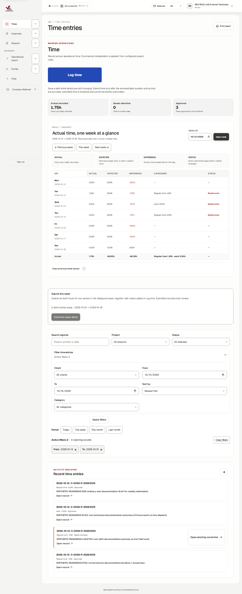
Approved actual time still shows Needs note where the expected target differs.
J&A Automation · BBS role manual · 6 October 2026
Review a week and submit eligible drafts
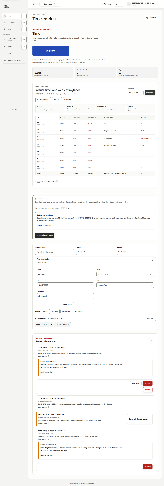
Before: eligible ordinary and linked correction drafts in the displayed week.
J&A Automation · BBS role manual · 6 October 2026
Review a week and submit eligible drafts
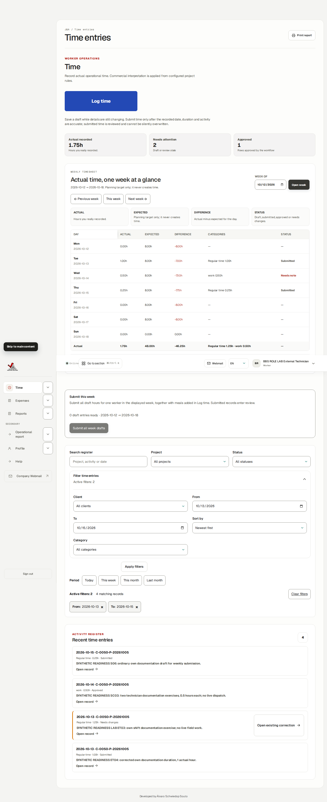
After weekly submission: both exact sources became Submitted; later Owner approval is shown separately.
J&A Automation · BBS role manual · 6 October 2026
Record an own purchase with its private receipt
Isolated BBS supplier role lab · genuine External Technician account · fictional October 2026 records
Go here: Expenses → Record expense
The worked expense is explicitly synthetic USD 8 tools/consumables on October 7, Worker payer. The receipt states no real purchase or payment. Your purchase facts are visible to you; Finance classification, customer recovery and reimbursement are later distinct decisions.
The actual form accepts JPG/PNG/HEIC/PDF receipt evidence up to 10 MB. Preserve the original currency and payer. A registered upload is not a universal assertion that an antivirus scan completed.
Do the task
Choose Record expense. Attach Receipt image or PDF; select Project, Date and Category. Enter Vendor, Amount 8, Currency USD, Who paid Worker and factual Description; fill applicable time/related-hours/payment context.
Use Save draft and open the saved expense. Check the registered receipt and purchase fields.
Use Submit. Genuine PM operationally approved this expense. Open private receipt now succeeds through your own authorized account.
Verify the result
One USD 8 expense and one receipt exist. No Finance review, reimbursement payment or client invoice is claimed for this External exercise.
If you get stuck
If receipt access or scan processing fails, report the document/expense ID and exact status. Do not create another expense while checking the first. Reviewed expense corrections follow the current permitted correction/handoff process.
J&A Automation · BBS role manual · 6 October 2026
Record an own purchase with its private receipt
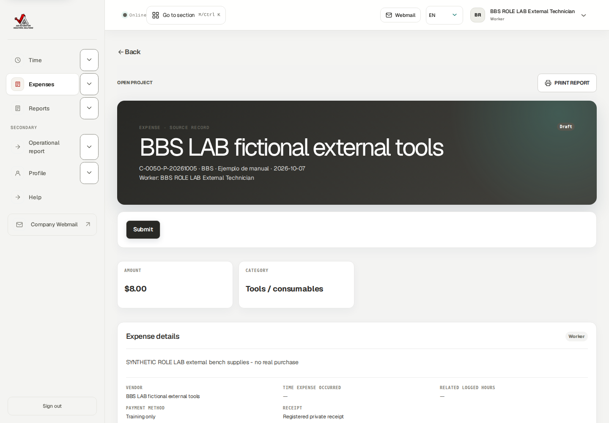
Own saved USD 8 Draft with registered synthetic receipt.
J&A Automation · BBS role manual · 6 October 2026
Record an own purchase with its private receipt
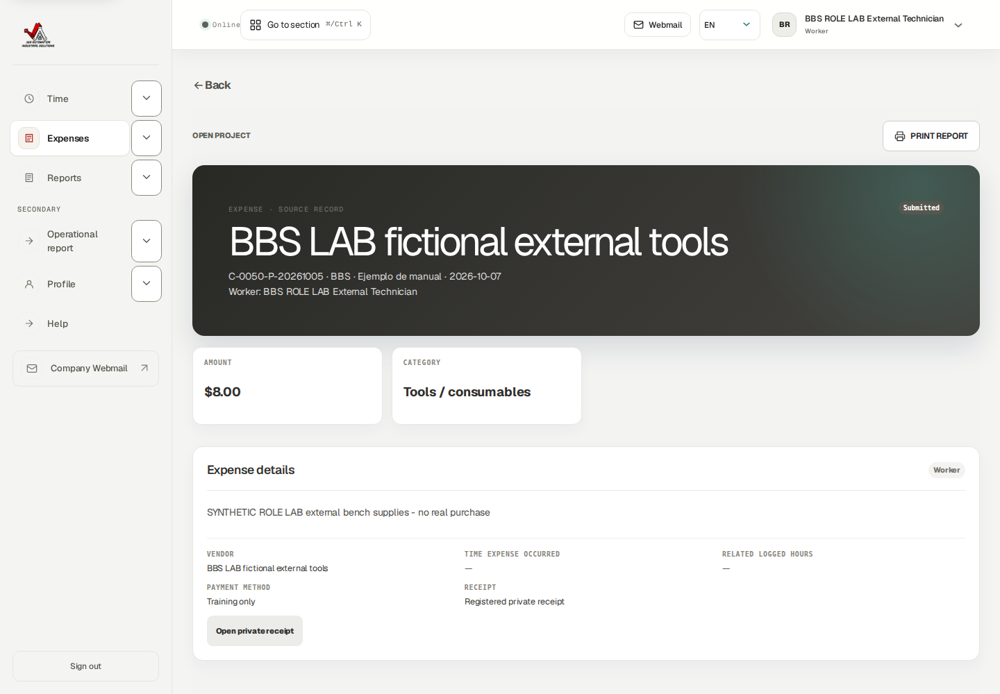
Own purchase Submitted, then PM Approved; financial treatment is separate.
J&A Automation · BBS role manual · 6 October 2026
Write and submit your own daily field report
Isolated BBS supplier role lab · genuine External Technician account · fictional October 2026 records
Go here: Reports → New daily report
Daily reports record operational facts, not timesheet hours, supplier payment or customer acceptance. This report’s author is the genuine External Technician account. Its fictional summary says no live equipment.
Fields include Project, Work date, Site / shift, Shift summary, Tasks completed, Problems found, Corrective actions, Downtime minutes, Standby reason, Open items, Next day plan and safety impact. Include genuine problems and next steps; do not invent a successful outcome.
Do the task
Choose New daily report and fill the actual work date/project and factual summary/tasks. Fill relevant operational exceptions and next steps.
Use Save daily report. Open the Draft and inspect saved contents. Autosaving or saving edits does not submit.
Use Submit for review. Confirm Submitted and the permitted reviewer’s later state.
Verify the result
Own Daily progressed Draft→Submitted→Approved through genuine PM review. It did not add hours or record a customer signature.
If you get stuck
Edit only through offered unsent-draft controls. For returned/approved content, preserve history and use a supported correction or reviewer handoff.
J&A Automation · BBS role manual · 6 October 2026
Write and submit your own daily field report
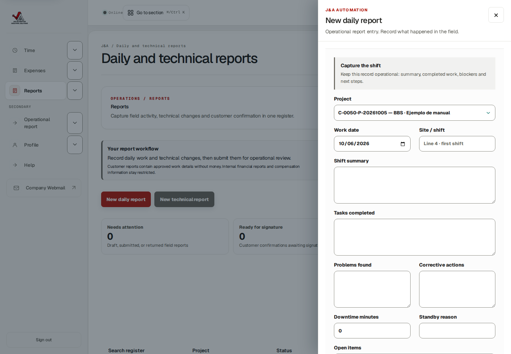
Native own Daily input in the role lab.
J&A Automation · BBS role manual · 6 October 2026
Write and submit your own daily field report
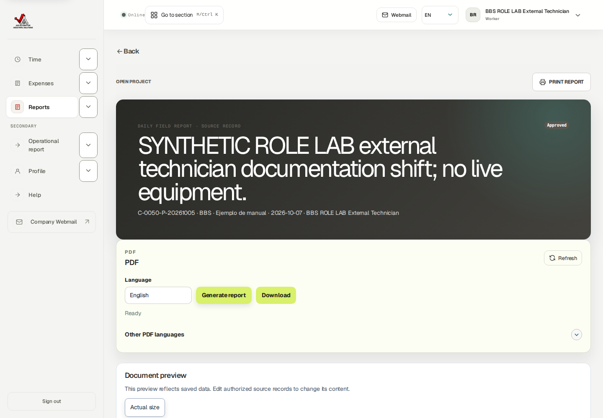
Own Daily after separate submission and genuine PM operational approval; ready output is a later step.
J&A Automation · BBS role manual · 6 October 2026
Save technical facts and private evidence before submission
Native isolated BBS role exercise · C-0050-P-20261005 · synthetic October 2026 work only
Go here: Reports → New report → Technical / PLC
Record system identity, observed issue, diagnosis, change, validation result, production impact, open risks and rollback. The October 19 example is an offline synthetic documentation bench; it claims no live PLC change.
Private evidence is a separate saved attachment. Scan status describes processing; Storage Saved and Scan Not scanned do not mean a clean security scan.
Do the task
Choose Technical / PLC, your BBS project and Report date 2026-10-19. Complete the technical fields and Save draft.
In private evidence select Evidence type Technical attachment, choose File and enter Notes explaining the evidence and scope. Choose Upload private evidence.
Before Submit verify the listed filename, attachment version, size, hash, Storage Saved and scan status. In this exercise upload preceded submission.
Submit the saved report. Reopen the exact source after PM review and check Approved, work author, report creator, reviewer and source version.
Verify the result
Native report 01a11186-932c-7459-84fb-791179b96c66 reached Approved v3. Its attachment was registered at v2 before Submit. Evidence types available in this Technical form also include PLC backup · before and PLC backup · after.
If you get stuck
If an upload fails, verify whether metadata exists before retrying. Keep backups and customer evidence private; never infer scan success from an upload success.
J&A Automation · BBS role manual · 6 October 2026
Save technical facts and private evidence before submission
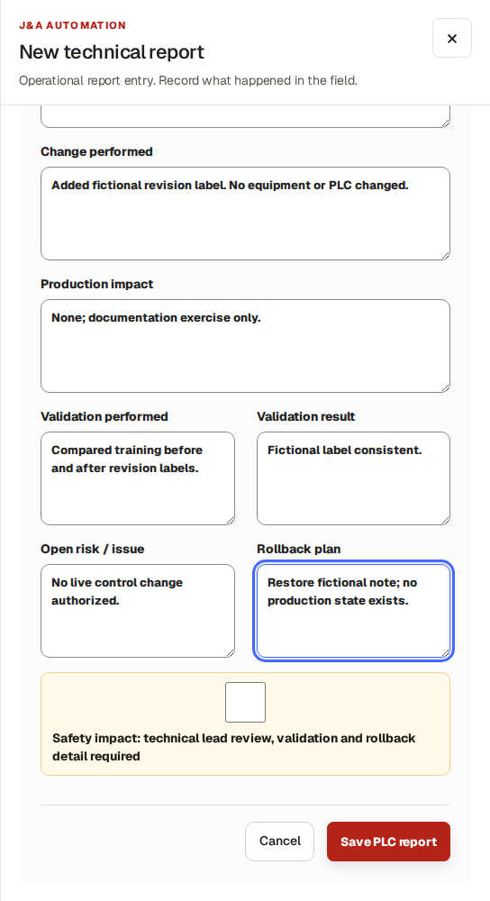
Complete native Technical form before Save draft.
J&A Automation · BBS role manual · 6 October 2026
Save technical facts and private evidence before submission
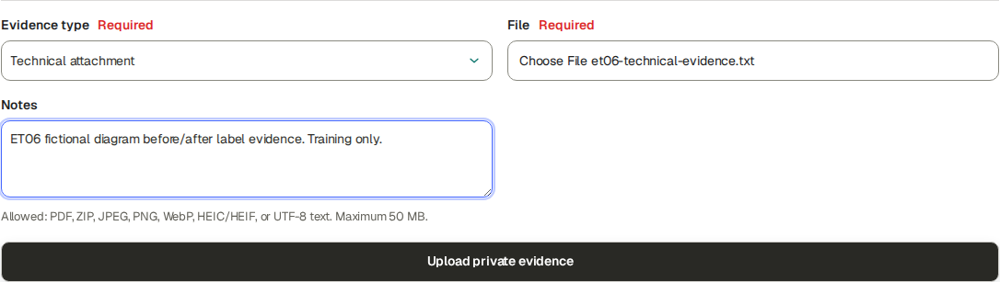
Actual Evidence type, File, Notes and Upload private evidence controls.
J&A Automation · BBS role manual · 6 October 2026
Save technical facts and private evidence before submission
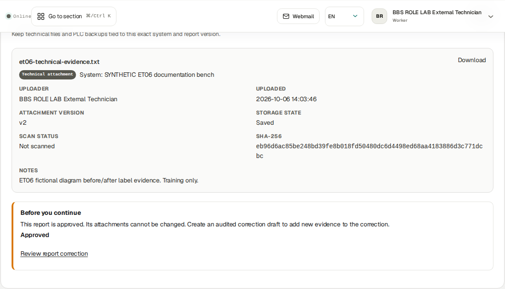
Saved private attachment metadata, including the actual Not scanned status.
J&A Automation · BBS role manual · 6 October 2026
Save technical facts and private evidence before submission
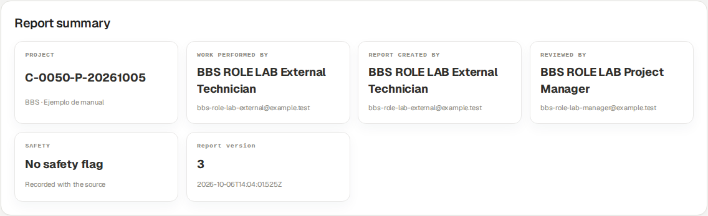
Approved source attribution and reviewer for the saved Technical report.
J&A Automation · BBS role manual · 6 October 2026
Generate, check and download the saved report version
Native isolated BBS role exercise · C-0050-P-20261005 · synthetic October 2026 work only
Go here: Own Daily / Technical source → PDF
The native preview reflects saved source data. A generated PDF is tied to source version and language; it does not approve the source or certify customer acceptance.
Do the task
Open your saved report and inspect its native preview. Select English, Spanish or Portuguese, then choose Generate report.
Queued means the artifact is being prepared. Use Refresh until the exact version/language becomes Ready; do not treat Queued as downloadable completion.
Choose Download on the Ready variant. Check project, report date, author, version, language and technical facts against the source.
Verify the result
October 19 Technical source v3 was generated in English, became Ready and was downloaded natively as Technical-report-C-0050-P-20261005-2026-10-19-SYNTHETIC-ET06-documentation-bench-v3-en-US.pdf.
If you get stuck
If a PDF is stale after a source change, generate the new saved version and compare its identity. Preserve prior version history.
J&A Automation · BBS role manual · 6 October 2026
Generate, check and download the saved report version
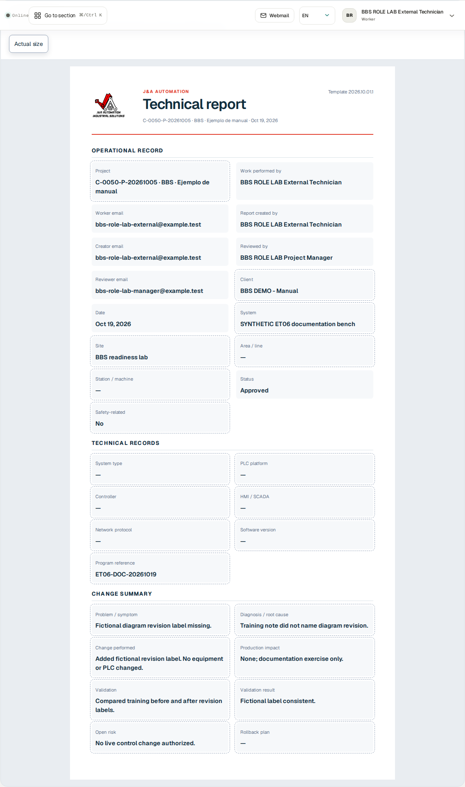
Readable native Technical document preview from saved facts.
J&A Automation · BBS role manual · 6 October 2026
Generate, check and download the saved report version
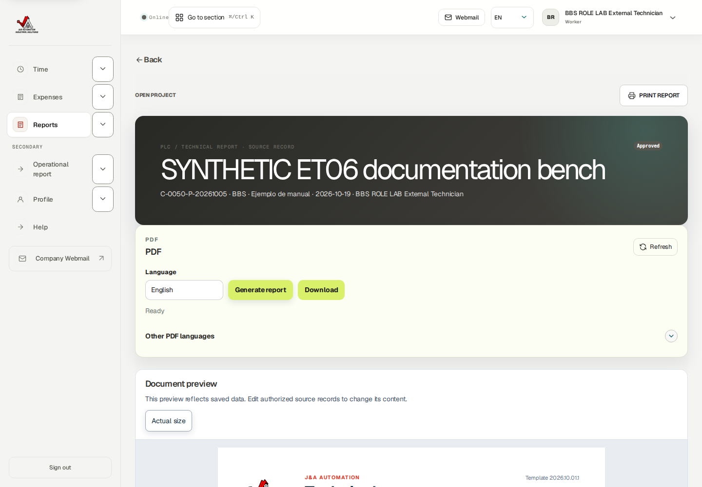
Ready English v3 variant with native Download.
J&A Automation · BBS role manual · 6 October 2026
Reconcile an exact period with its native CSV
Native isolated BBS role exercise · C-0050-P-20261005 · synthetic October 2026 work only
Go here: Operational report → date filters → Download CSV
The earlier 2.75 h total is a historical October 6–7 checkpoint, not the current full-month total. Later October records were added. Use exact dates to reproduce it.
The final October 6–7 export contains two Approved rows: 120 minutes on October 6, source 01a10e4b-c33e-7033-a065-d3980b92c94d, and the 45-minute October 7 correction 01a10e53-31a7-7509-86a4-7a134a731e6c. Total 165 minutes = 2.75 h. The returned 60-minute original is not counted as approved work.
Do the task
Open Operational report, select BBS and filter From 2026-10-06 to To 2026-10-07.
Check technician, dates, duration, State and Recorded by. Choose Download CSV and compare the two exported rows with the filtered screen.
For later work choose a new date range and describe its actual total; never carry the historical 2.75 h forward.
Verify the result
Native final CSV external-final-oct06-07.csv has two Approved rows and nine operational columns. No rate, internal cost, margin or pay column is present.
If you get stuck
If screen and CSV differ, check filters and source states before escalating. Keep both the historical checkpoint and later export identity.
J&A Automation · BBS role manual · 6 October 2026
Reconcile an exact period with its native CSV
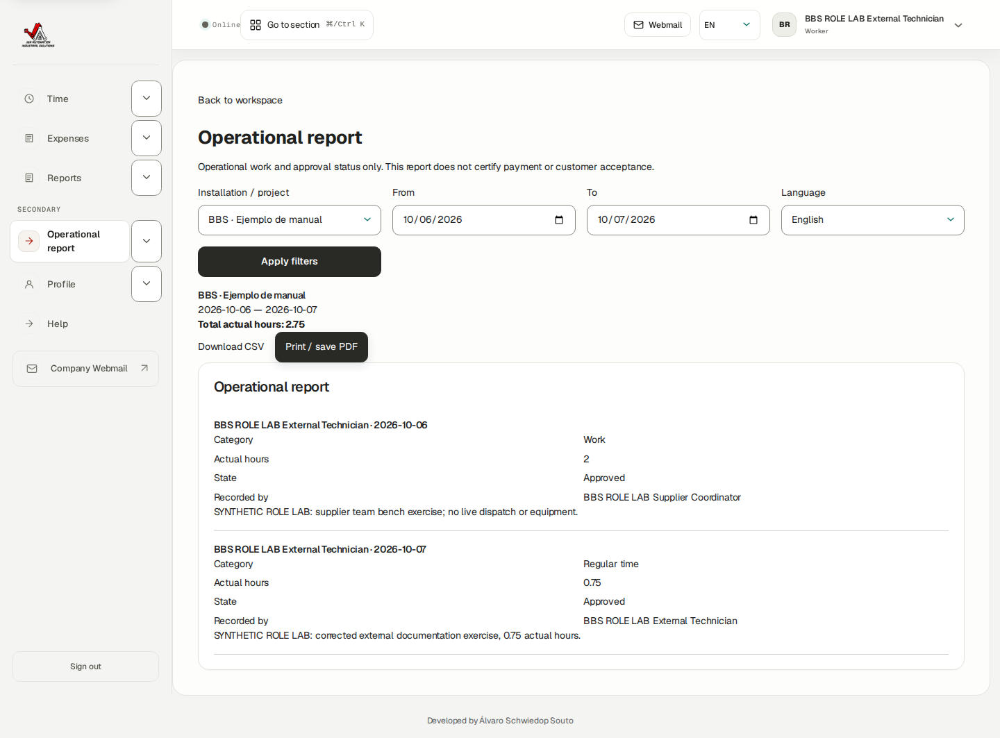
Exact October 6–7 final filtered screen: two Approved rows totaling 2.75 h, matching the final native CSV.
J&A Automation · BBS role manual · 6 October 2026
Use narrow screens and check saved results
Isolated BBS supplier role lab · genuine External Technician account · fictional October 2026 records
Go here: Time; Expenses; Reports; Operational report
Use role navigation and narrow-screen menu controls. Review account/project/date/member fields carefully before saving. A table’s internal horizontal-scroll hint is different from page-level overflow.
Do the task
On a phone open the required workspace through navigation and apply the intended scope.
After saving or submitting, reopen the existing source to verify its result rather than repeating the action.
Verify the result
Operational report checked at 390 and 768 pixels: page width of the scrollable page matches viewport width; native two-source report retained. Desktop 1440 was also inspected.
If you get stuck
Report clipped controls with a safe screenshot, width, environment and exact action. Never save duplicate records to compensate for a hidden result.
J&A Automation · BBS role manual · 6 October 2026
Use narrow screens and check saved results
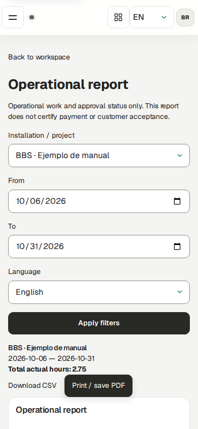
Native 390 pixel external own operational report.
J&A Automation · BBS role manual · 6 October 2026
Use narrow screens and check saved results
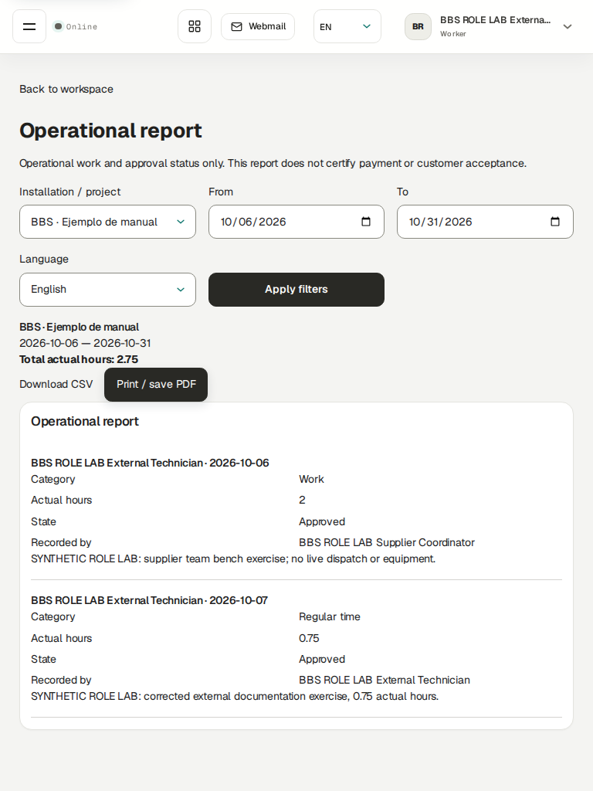
Native 768 pixel external own operational report.
J&A Automation · BBS role manual · 6 October 2026
Maintain your workforce profile and individual security
Reference procedure · current own-role controls/source checked; mutations not exercised
Go here: Profile → Expertise and availability; Account security
Expertise and availability are planning inputs, distinct from supplier authorization/project assignment. The own profile was inspected natively; no security or profile mutations occurred here. A generic workforce-profile Worker label does not grant internal Worker financial workspaces.
Add expertise offers expertise/proficiency. Add availability opens dated UTC availability windows. Passkey registration uses Device name and Register passkey. Authenticator setup/recovery material is sensitive; never include it in report evidence.
For invitation and sign-in use Access · activate the invitation and sign in (access). For MFA, devices and recovery use Security · verify your own device and recovery options (security).
Do the task
Check your own expertise and UTC calendar. Use offered own-profile controls only for genuine information.
For an authorized account-security change use your own device/authenticator prompts and verify completion before signing out. Store recovery codes in an approved password manager.
Verify the result
Skills/availability do not grant review, supplier administration, private-pay or billing rights. Security success is not claimed from read-only controls.
If you get stuck
Ask the Owner/coordinator for authorization/assignment changes and Owner/support for access recovery. Do not share credentials.
J&A Automation · BBS role manual · 6 October 2026
Maintain your workforce profile and individual security
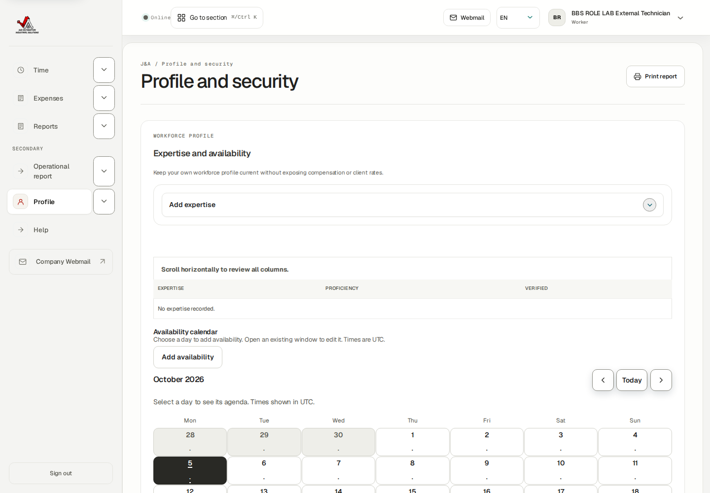
Own workforce profile inspected without generating any security secret.
J&A Automation · BBS role manual · 6 October 2026
Use Help and hand problems to the correct role
Isolated BBS supplier role lab · genuine External Technician account · fictional October 2026 records
Go here: Help
Help’s invitation lesson distinguishes mailbox-linked access and a single-use external invitation; there is no public signup. Supplier operations guidance has different paths for technician/coordinator.
The verified support contact is admin@j-aautomation.com. Live company portal/webmail links are live services. No email was sent in this exercise. External Technician has no My Pay workspace: supplier commercial/payment questions belong to the coordinator/Finance using their authorized process.
Do the task
Read the External technician starting path and normal-day guidance in Help.
Send actual source errors to the operational reviewer; supplier authorization/account questions to Owner/coordinator; financial issues to coordinator/Finance.
Include environment, role, project/record ID, date, intended action and exact message. Use safe screenshots without session cookies/passwords/recovery codes.
Verify the result
My Pay, Finance, Billing, supplier team and another Worker’s time returned 403. Unrelated report/receipt returned 404 after the own-output route fix.
If you get stuck
Do not use another account to work around denial or publish private receipt links. Marking/reading a notification, where offered, is not approval or acceptance.
J&A Automation · BBS role manual · 6 October 2026
Use Help and hand problems to the correct role
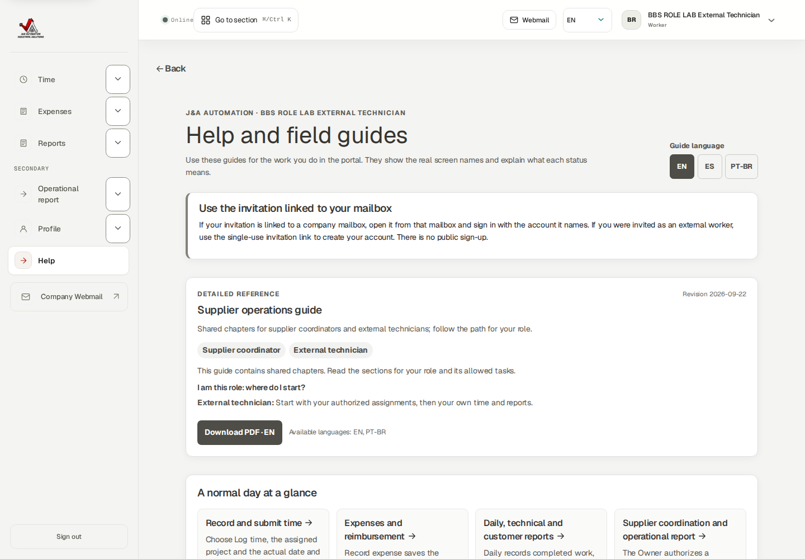
Native External Technician Help path and invitation guidance.
J&A Automation · BBS role manual · 6 October 2026
Planning appendix · assignment dates and expected targets
Isolated BBS planning lab · real role browser sessions · fictional October 22–23, 2026 work · no production records or financial changes
Go here: Sign in → Time → Week of → Open week
Project membership gives dated access to record work; a published plan describes intended work; Expected in the weekly timesheet comes from the effective working schedule. These are three separate records. None creates actual hours, approval, customer charges or pay automatically.
The Owner published a two-hour October 22 assignment for this External Technician. Publishing succeeded, but this restricted profile has no Today agenda or Planning calendar. Sign-in/root opens Time; navigation contains Time, Expenses, Reports, Operational report, Profile and Help. Direct Today and Planning links show Access restricted. This is the current profile limitation, not proof of an absent project assignment.
The effective schedule sets eight expected weekday hours. Our technician separately saved and submitted two fictional actual hours on October 22. The weekly row therefore shows Actual 2.00h, Expected 8.00h and Difference −6.00h, even though the published plan is two hours. The later coordinator-recorded October 23 hour contributes another one hour to the weekly total.
After Owner approval, the weekly status reads Needs note because actual differs from expected; the underlying source remains Approved. It is a schedule-variance prompt, not a rejection, payment state or instruction to invent six missing hours. Ask the Owner how to explain the genuine difference.
Do the task
Sign in with your own External Technician account and confirm the training environment. Open Time; verify BBS is available in Assigned project before entering work.
For this exercise set Week of to 2026-10-19 and choose Open week. Inspect the October 22 daily row and open its day entries to inspect the actual source separately.
If the Owner tells you a plan was published, obtain the operational time/site instructions through the approved coordinator or Owner communication channel. This profile cannot inspect or accept the internal agenda card.
Record only work actually performed through Log time → Save draft → individual Submit. Check the source becomes Submitted, then Approved after authorized J&A Owner review.
Compare Actual, Expected and Difference. The eight-hour schedule target is not changed by a two-hour plan or by submission.
J&A Automation · BBS role manual · 6 October 2026
Planning appendix · assignment dates and expected targets · continued
Verify the result
Native own two-hour save/submission and subsequent Owner approval succeeded. The Owner-created plan remained a separate published record.
External Operational report on October 23 totals only the technician’s own one hour; coordinator’s team report totals two hours. Another technician’s known source returned Access restricted.
Client rates, company cost, margin, supplier payment and colleagues’ compensation are outside this operational workspace.
If you get stuck
If BBS is missing, send the Owner/coordinator your intended project and work date. They must check active account, supplier association, supplier authorization and dated project assignment. Do not borrow a login or duplicate sources.
If Planning or Today is unavailable, return to Time. Creating another assignment or repeatedly requesting the denied page does not add the restricted agenda feature.
An unavailable Expected value is displayed as — when a usable effective schedule/unique assignment cannot be determined. Ask the Owner to investigate scope and dates; do not treat it as zero actual work.
J&A Automation · BBS role manual · 6 October 2026
Planning appendix · assignment dates and expected targets
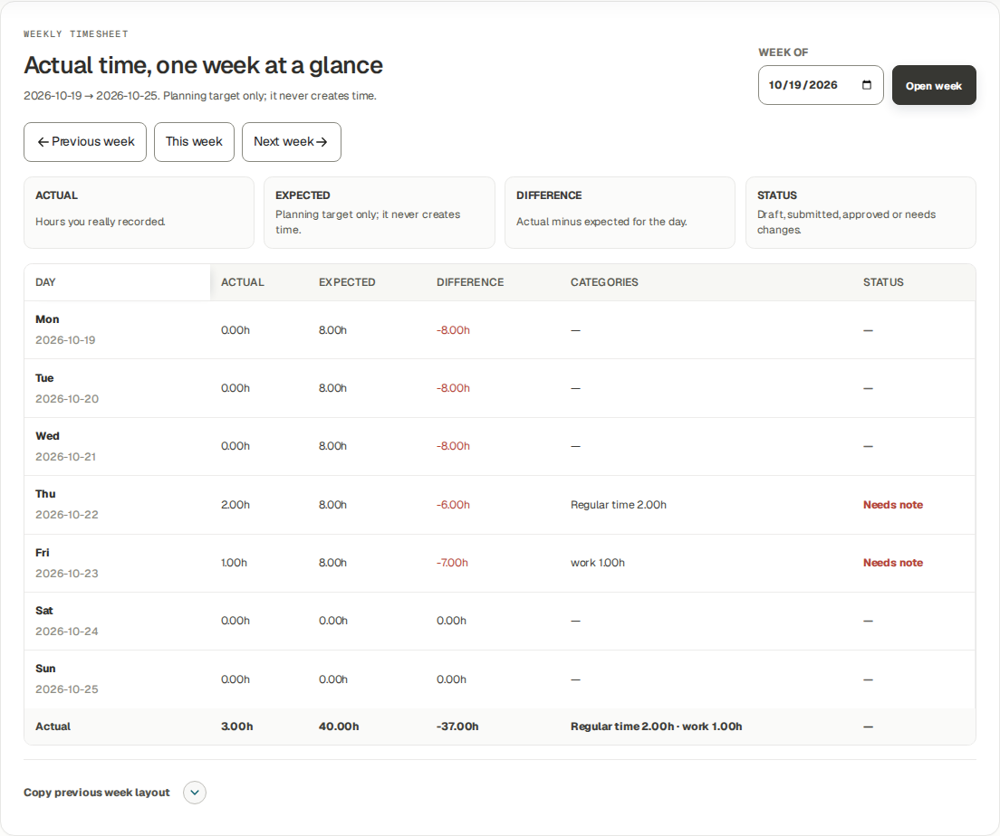
Approved October 22 source: weekly Actual 2.00h, Expected 8.00h, Difference −6.00h and Needs note. The weekly total also includes the separate October 23 hour.
J&A Automation · BBS role manual · 6 October 2026
Planning appendix · assignment dates and expected targets
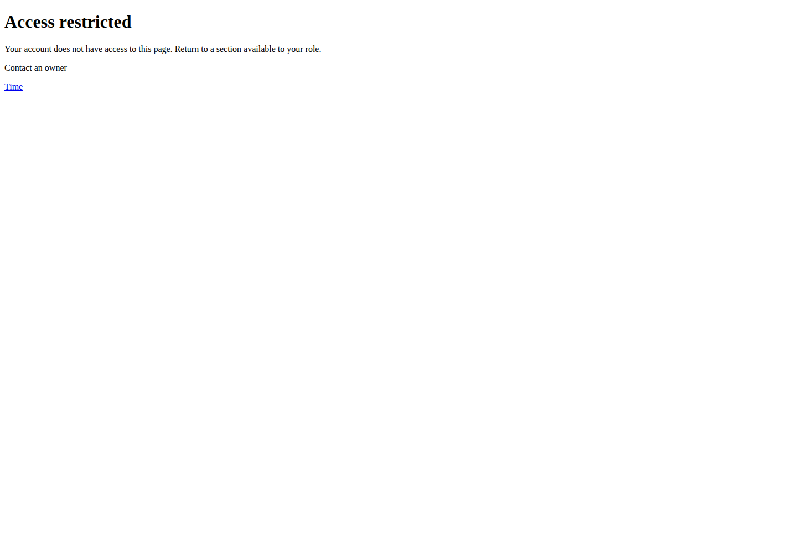
Native External Technician Planning route: Access restricted with a Time recovery link. The same role has no Today or Planning navigation.
J&A Automation · BBS role manual · 6 October 2026
Planning appendix · assignment dates and expected targets
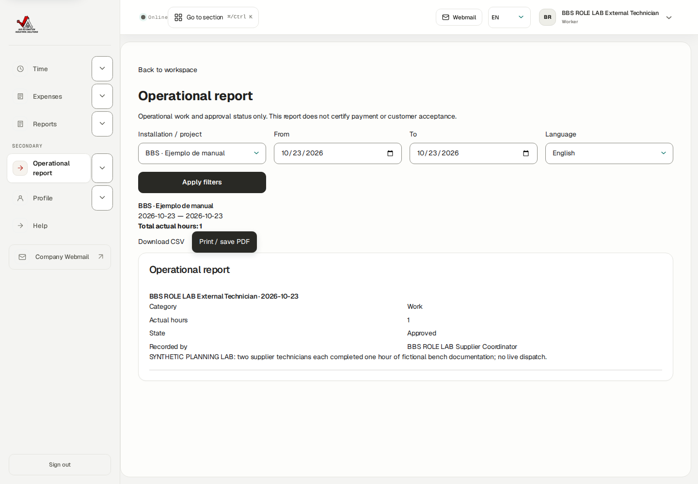
External own operational report: only their one approved coordinator-recorded October 23 hour, with correct Recorded by attribution.
J&A Automation · BBS role manual · 6 October 2026
Describe completed work, open goals and the next shift
Isolated BBS planning lab · real role browser sessions · fictional October 22–23, 2026 work · no production records or financial changes
Go here: Reports → New daily report → Save daily report → Submit for review
There is no separate worker-goal screen with Accept, Reject or Mark completed buttons. Use operational Daily report fields to describe completed work, unresolved items and intended next steps. A next-day plan is narrative context; it does not publish a shift, create actual time or guarantee a task was done.
The October 22 synthetic report describes a fictional wiring-list review under Tasks completed, a diagram requiring clarification under Open items and a conditional follow-up under Next-day plan. It was saved, submitted and operationally approved by the genuine Project Manager. No customer acceptance, equipment change or payment is asserted.
Time and Daily reports have separate handoffs in this supplier profile. Submitted supplier time is reviewed by an authorized J&A Owner; the ordinary Project Manager Time queue excludes supplier hours. The Project Manager successfully reviewed this Daily report in the Reports queue.
Do the task
Open Reports and choose New daily report. Select BBS and Work date 2026-10-22; provide Site / shift and Shift summary.
Fill Tasks completed with what happened, Open items with remaining questions and Next-day plan with proposed work. Keep private rates, costs, pay and client-commercial arrangements out of operational narratives.
Choose Save daily report, reopen the new source and inspect the saved fields and Work performed by / Report created by attribution.
Choose Submit for review. Saving alone leaves a draft. After reviewer action refresh and verify Approved.
When the plan or facts change, coordinate with the Owner and use the supported linked correction for a reviewed report. Do not overwrite approved history or invent a task-completion control.
Verify the result
Native save → Submit for review → PM Approve report completed. The approved report retains Tasks completed, Open items and Next-day plan.
J&A Automation · BBS role manual · 6 October 2026
Describe completed work, open goals and the next shift · continued
The separate two-hour actual source is Owner Approved. Narrative tasks did not create or alter its duration.
If you get stuck
If a time reviewer cannot find supplier hours in the PM queue, hand the exact project, work date and source ID to an authorized J&A Owner; do not submit duplicate time.
Approval is operational review. Continue the separate customer sign-off or financial process only through an authorized role.
J&A Automation · BBS role manual · 6 October 2026
Describe completed work, open goals and the next shift
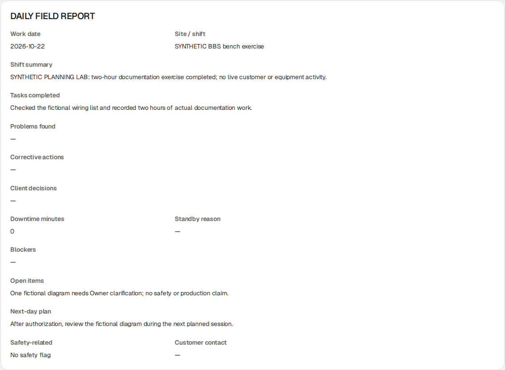
Saved approved operational facts: Tasks completed, Open items and Next-day plan. These narrative goals do not create planning or actual-time records.
J&A Automation · BBS role manual · 6 October 2026
Describe completed work, open goals and the next shift
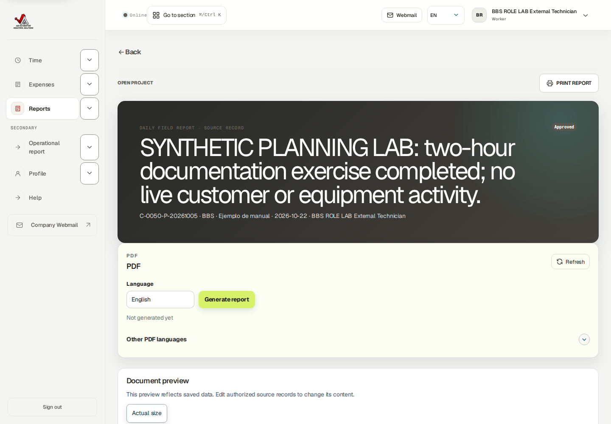
Same synthetic Daily source after genuine PM approval. Its Approved badge is separate from time approval and customer acceptance.
J&A Automation · BBS role manual · 6 October 2026
Complete the technician handoff
Isolated BBS supplier role lab · genuine External Technician account · fictional October 2026 records
Go here: Time → Expenses → Reports → Operational report
Use this task checklist for genuine authorized work in your own account. Saved, submitted, approved, financially reviewed and paid are separate states.
Do the task
Verify own account/environment/project/date authorization.
Record actual hours once; inspect and submit. Read returned reasons and use linked corrections.
Record each purchase once with actual payer/currency/private evidence; submit for operational review.
Save and submit required Daily/Technical facts; hand risks/open work to PM.
Check review states and current own operational totals; download permitted output only when Ready.
Give reviewer/coordinator source IDs and unresolved issues; never claim customer acceptance/pay from operational approval.
Verify the result
Native coverage includes saved first-shift time, linked correction and Owner approval, ordinary plus correction weekly submission with exact IDs, private Technical upload before Submit, PM Technical approval, Ready English PDF download and exact filtered historical CSV. See Verification · current coverage and historical evidence (verification).
If you get stuck
Layout copying, browser print completion and new customer acceptance remain reference-only. Use the shared access/security chapters for their verified procedures.
J&A Automation · BBS role manual · 6 October 2026
Recovery · sources, obligations and immutable history
Use the role’s worked correction lesson and the current record controls. A new purchase is different from a correction to an existing purchase. A payment reversal records a cash-entry correction; it does not amend a finalized compensation entitlement or unlock its time sources.
State
Supported next action
Ordinary Draft
Use Edit/Save draft where present; attach the actual receipt/evidence before Submit. Inspect each saved draft after weekly table entry.
Submitted
Read current state and reviewer handoff. Do not create another source merely because review is pending.
Needs changes
Read the reason. Time uses Create corrected draft where available, then submit/review the linked replacement. A returned Daily/Technical report instead offers Edit and Save changes on the same report, then Submit for review; follow the exact role lesson.
Rejected
Inspect the reason and contact reviewer/Owner. The time detail does not offer the same linked-correction route as Needs changes; do not assume that route exists.
Approved, unlocked
Use the offered linked correction, preserving the original. Re-review the replacement and refresh affected unissued drafts/report versions through their supported controls.
Issued, financially locked or finalized compensation
Stop source editing. Send source ID/project/date, original/correct values, reason, affected invoice/settlement and payment references to Owner/Finance. If no authorized amendment control exists, escalate to platform support.
If you get stuck
For a finalized-compensation guard, send the exact source/date/reason and requested factual correction to Finance/Owner. Wait for a documented authorized resolution and explicit instruction about the source lock. Do not reverse a payment, change work dates or duplicate hours to evade the guard.
J&A Automation · BBS role manual · 6 October 2026
Security · verify your own device and recovery options
Go here: Profile → Account security; Profile → Add availability
Do the task
Check Account security identifies YOUR account even when an authorized workforce profile inspection shows another worker above it. Enroll only your own device. MFA is optional in this release.
For a passkey, enter Device name and choose Register passkey on the approved secure portal. Complete your device’s creation confirmation. Verify Passkey registered for this account, the registered count and named device row. Cancelled/failed registration is not enrollment.
To retire your own lost/obsolete passkey, first confirm you retain another working sign-in method. Select Revoke on the exact device and verify Passkey revoked and removal of its row. If you cannot sign in, use the verified support route rather than another person’s session.
For an authenticator, choose Enable MFA. Keep the setup URI and one-time recovery codes private in the approved password manager. Add the URI to your authenticator, enter its current six-digit Authenticator code and choose Verify MFA. Verify Enabled and Disable MFA appear; enabling without verification is not completed enrollment.
At a later MFA sign-in use Six-digit code → Verify and continue. If the authenticator is unavailable, choose Use a recovery code and enter one unused stored code. If neither method is available, contact admin@j-aautomation.com for identity-verified recovery. Do not send recovery codes or the setup URI to support.
To remove optional MFA while signed in, choose Disable MFA and verify Not enabled/Enable MFA. Confirm the intended own account before doing so. A successful settings change is separate from recovering a lost account.
Where Add availability is offered, fill Starts, Ends, Availability and Note using the displayed time basis, then Save availability. Verify the saved interval/status/note in the list; use Edit availability on that row and save the changed values. Availability is not project membership, a published shift or actual hours.
J&A Automation · BBS role manual · 6 October 2026
Security · verify your own device and recovery options
Isolated recipient’s authenticator setup was verified; the native Enabled state is shown after secret URI/recovery codes disappeared. No usable security material is published.
J&A Automation · BBS role manual · 6 October 2026
Verification · current coverage and historical evidence
English readiness edition: 6 October 2026, based on repository abc12c0961b2 with the recorded readiness fixes. The publication receipt identifies the final commit and deployment. This edition teaches the permitted ordinary cycle and supported handoffs; it does not certify every contract, device or external service.
The current evidence lives in docs/evidence/bbs-readiness-20261006. Its correction register maps all 72 suite findings to tasks, browser evidence or precise reference/support boundaries. Role manifests identify source IDs, state transitions and downloaded artifacts. Historical 5 October outputs remain historical; new screenshots do not rewrite their totals or private bytes.
Recipient activation, actual authenticator verification and own passkey registration/revocation were exercised on a separate isolated recipient. The same account controls are shared, but enrollment was not repeated for every role or physical device. Offline/expired-link and lost-device paths remain precise references where not separately executed.
Weekly submission was exercised with one ordinary draft and one eligible linked correction for Worker, Chief, External Technician and Supplier Coordinator: two selected drafts became two Submitted sources and zero remaining drafts. This does not guarantee that locked, withdrawn, out-of-scope or ineligible corrections will submit.
A final Accounting cut succeeded in a separate clean Finance portfolio; an Auditor read and downloaded its outputs. Original BBS issuer-history and source-reconciliation blockers remain documented. Email transport, real bank movement, accountant approval and genuine customer acceptance are outside the synthetic tests.
Verify the result
For a task described as reference, follow the exact named controls and prerequisites; do not infer that an illustrated outcome was executed. For support-only recovery, preserve the blocked source and obtain the documented receiving result before proceeding. Out-of-role financial information is intentionally excluded from operational guides.